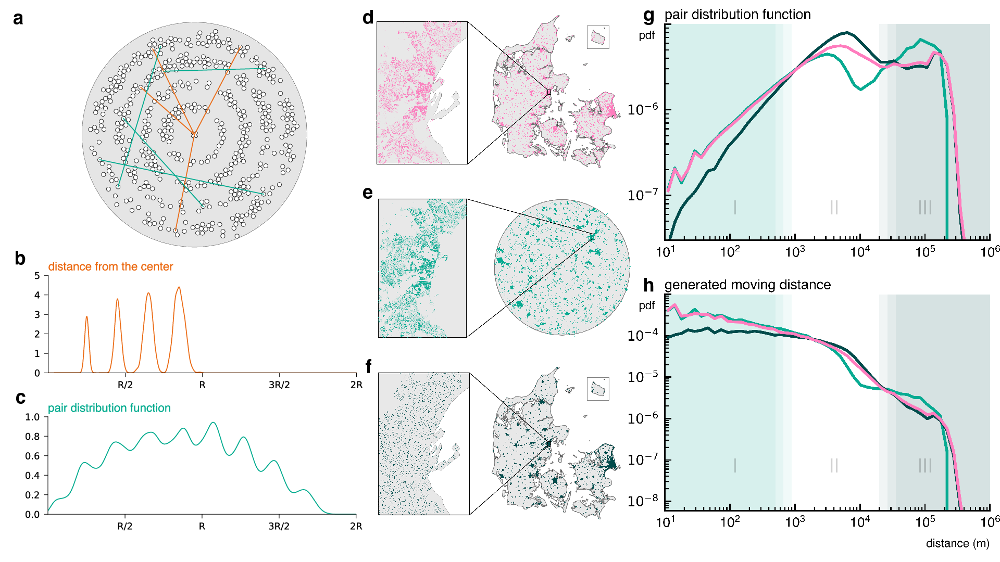
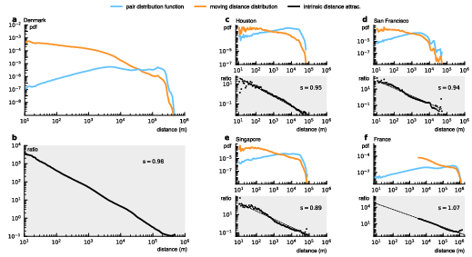

Decoupling Geographical Constraints from Human Mobility
2Center for Social Data Science, University of Copenhagen

Three geographies (Real Denmark, Disk Denmark, Uniform Denmark) demonstrate how the pair distribution captures geographical structure and affects observed mobility patterns.
Abstract
Driven by access to large volumes of movement data, the study of human mobility has grown rapidly over the past decades. The field has shown that human mobility is scale-free, proposed models to generate scale-free moving distance distributions, and explained how the scale-free distribution arises. It has not, however, explicitly addressed how mobility is structured by geographical constraints.
Based on millions of moves, we show how separating the effect of geography from mobility choices reveals a power law spanning five orders of magnitude. To do so, we incorporate geography via the pair distribution function that encapsulates the structure of locations on which mobility occurs. Showing how the spatial distribution of human settlements shapes human mobility, our approach bridges the gap between distance- and opportunity-based models of human mobility.
Key Findings
- The Pair Distribution Method: We realized that not all residential moves are possible — one can generally only move between places where a house is actually present. By calculating the pairwise distances between all addresses (the "pair distribution"), we capture precisely which moves are possible to make.
- A Universal Power Law: Normalizing mobility data by the pair distribution reveals an astonishingly clear result: a perfect power law spanning five orders of magnitude — from 10 meters up to 1,000 kilometers. This remarkable finding held true across datasets from Denmark, France, Houston, Singapore, and San Francisco.
- Beyond the Gravity Law: Our discovery aligns closely with the classic gravity model but generalizes it into a continuous, geography-independent form. The pair distribution allows us to take the idea of population to a continuous limit, at the fine scale of individual addresses.
- City-Scale Patterns: When considering mobility centered around a single city, we observed a universal piecewise behavior: one power law governs within-city mobility (where distance matters less), while another steeper power law describes between-city moves.

Renormalizing the moving distance distribution by the pair distribution uncovers a power law spanning five orders of magnitude (10m to 500km). Results shown for Denmark, France, San Francisco, Houston, and Singapore.
Method Overview
To characterize geography we study the pair distribution function between locations. The pair distribution is a powerful tool from statistical mechanics developed to understand the structural properties of materials. Here, we argue that the pair distribution is able to capture the structural properties of locations in a given geography.
Any study of the observed movement distances f(r) ends up analyzing a biased set of observations: a quantity that includes the geometry of space and the density, both reflected in the pair distribution p(r). To uncover any geometry-independent behavior, we must adjust our observation by the geometry encoded in the pair distribution:
π(r) ∝ f(r) / p(r)
This normalization reveals that the intrinsic distance attractiveness function follows a power law remarkably well: π(r) = 1/r, consistent across scales from 10m to 500km.
Data
Our primary analysis is based on a dataset comprised of 36 years of registry data on 39 million residential moves between 3.3 million Danish addresses, pinpointed with uncertainty of only 2 meters. This resolution far exceeds the state-of-the-art 50m accuracy typical of GPS data. We extended the analysis to day-to-day mobility data from Houston, Singapore, San Francisco, and residential mobility data from France.
BibTeX
@article{boucherie2025decoupling,
title={Decoupling geographical constraints from human mobility},
author={Boucherie, Louis and Maier, Benjamin F. and Lehmann, Sune},
journal={Nature Human Behaviour},
year={2025},
publisher={Nature Publishing Group},
doi={10.1038/s41562-025-02282-7}
}